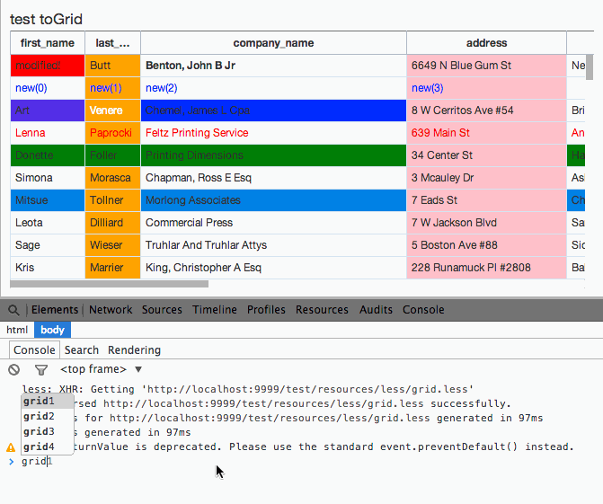
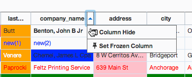
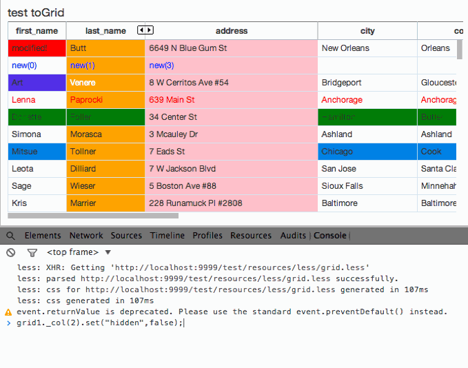
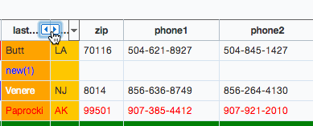

Column 숨기기
특정 Column을 숨기기 위한 방법은, W5 Grid parts select method를 사용한 .set() API를 사용하는 방법과, UI로 조작하는 방법이 있습니다.
grid.col( index | id ).set("hidden", true )
argument를
-
index로 했을 경우0 부터 시작하며, 보이는 컬럼의 순서만 고려합니다.
데이터 원본의 index로 접근하고 싶다면 _col(index) select method로 사용하세요. -
id로 했을 경우colModel의 id로 column의 unique 값으로 셀렉트하며, 이는 index와 달리 보이지 않는 컬럼도 처리가 가능합니다.
grid란 변수에 W5 Grid를 생성했다고 가정하면, 조작하고 싶은 column의 인덱스를 .col() select method로 지정하여 set API로 첫번째 인자에 "hidden"과 숨김/보임 여부의 true 혹은
false값을 부여하면 됩니다.
var grid = new w5.Grid({ ... }).render();
...
grid.col(2).set("hidden", true); // 세번째에 해당하는 Column을 숨김니다.

UI로 Column 숨기기
UI로 Column 숨기기는 Column Menu에 있습니다. Column Menu는 header label에 마우스를 올려두었을때 생기는 화살표 모양의 버튼을 누르면 나타납니다. 화살표 모양의 버튼을 누르면 몇가지 선택할 수 있는 메뉴가 나오는데, 첫번째 메뉴인 column hide를 선택하면 해당 컬럼이 가려지고, 가려져있다는 표시로 좌,우 방향의 버튼이 보입니다. 이 버튼을 누르면 가려졌던 컬럼을 다시 보이게끔 할 수 있습니다.

Column 보이기
Column 보이기도 마찬가지로 API로 접근하는 방법과, UI로 선택하는 방법이 있습니다.
grid.col( id ).set("hidden", false )
숨겨진 Column을 보이게하려면 보이는 column의 index로는 셀렉트하는 것이 불가능 하기에 index로 접근보다 id로 접근하는 것이 더 편할 것입니다. .col() select method에 id를 넘겨주고, .set("hidden", arg2)에 두번 인자를
false로 넘겨주면 됩니다.
var grid = new w5.Grid({ ... });
...
grid.render();
...
grid.col("name").set("hidden", false); // Column id가 "name"인 Column을 보이게끔 합니다.
grid._col( index ).set("hidden", false )
위에서 말 했던 것 처럼 특정 Column을 보이게끔 하기 위에서는 보이는 column을 기준으로 하는 .col() select method로는 감춰진 Column에 접근할 수 없습니다. 꼭 index로 접근해야 하는 경우에는 _를 붙여 '._col()' select method를 사용하세요. ._col() select method는 데이터 기준의 Column index로
select합니다.
var grid = new w5.Grid({ ... });
...
grid.render();
...
grid._col(2).set("hidden", false); // 숨겼던 세번째 Column을 보이게끔 합니다.

UI로 Column 보이기
특정 Column을 숨길 시 숨겨진 컬럼이 있던 자리에 양쪽 화살표 버튼이 나타나는 것을 볼 수 있을 것입니다. 이 버튼이 Column을 보이게끔 하는 버튼입니다. 이 Column 보이기 버튼은 연속된 Column이 가려져 있으면 그러한 Column들을 모두 펼쳐 보여줍니다.
